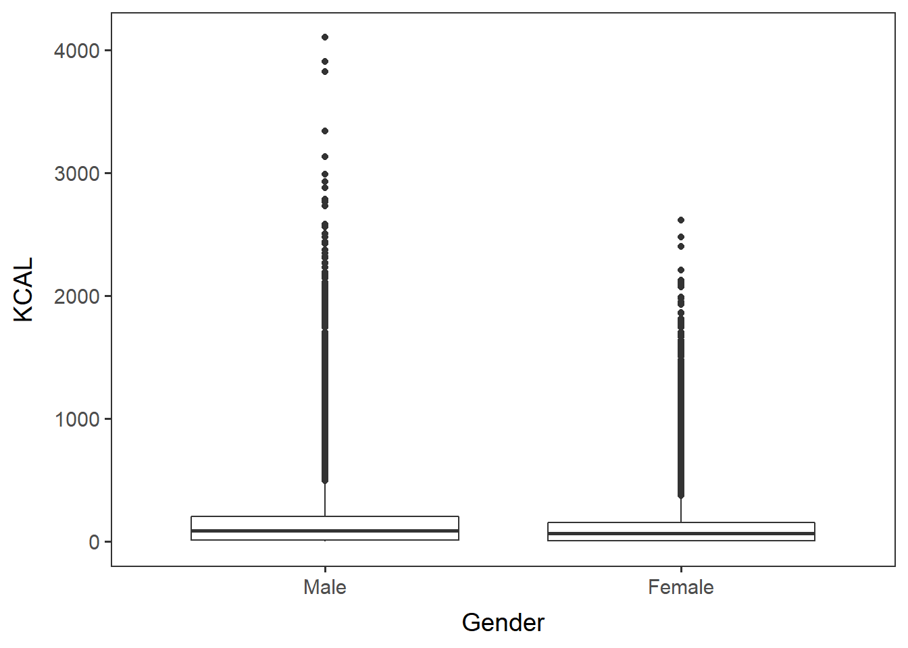
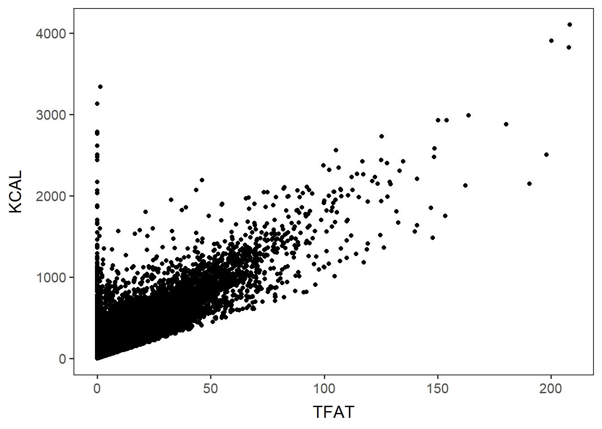
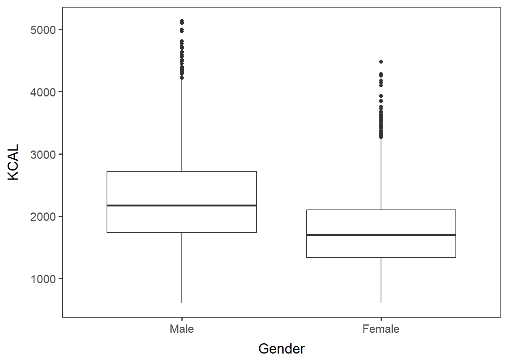
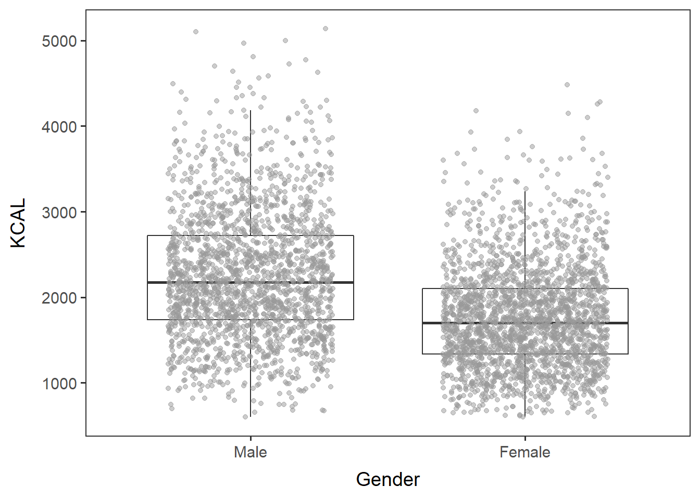
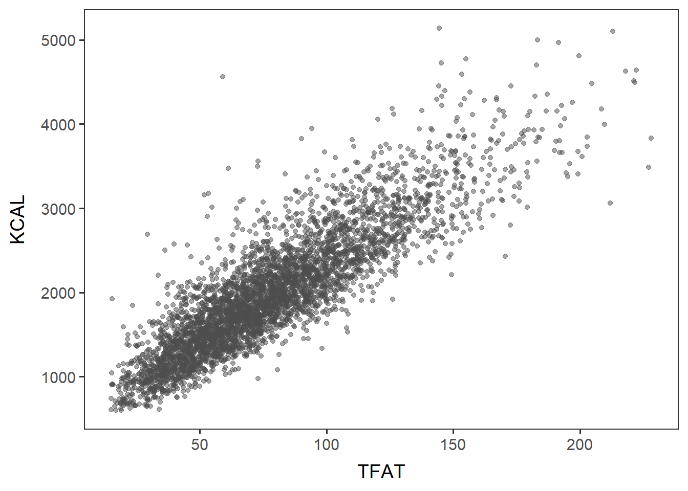

Name the path to DietR directory where input files are pulled.
main_wd <- "~/GitHub/DietR"Load the necessary packages.
library(ggplot2)Call color palette.
distinct100colors <- readRDS("lib/distinct100colors.rda")Load the necessary functions.
source("lib/specify_data_dir.R")
source("lib/data_overview.R")
source("lib/ggplot2themes.R")You can come back to the main directory by:
setwd(main_wd)Specify the directory where the data is.
SpecifyDataDirectory(directory.name= "eg_data/NHANES/")Load your items data to be analyzed.
“_FC_cc_f_d” stands for: “Food category variables added”, “column names changed”, “food formatted”, and “demographic data merged”.
food12f_d <- read.table("Food_D12_FC_cc_f_d.txt", sep="\t", header=T) View min, quantiles, mean, etc. for a variable in your dataset.
summary(food12f_d$KCAL)## Min. 1st Qu. Median Mean 3rd Qu. Max.
## 0.0 7.0 73.0 131.6 176.0 4100.0Calculate the minimum, 1st quantile, median, mean, 3rd quantile, max, and standard deviation for each variable in the input dataframe and save as a .txt file.
[NOTE] These are individual items, not by user or day.
SummaryStats(inputdf = food12f_d,
outfn = "Food_D12_FC_cc_f_d_summ.txt")The first six rows of Food_D12_FC_cc_f_d_summ.txt looks like this. Summary statistics of some variables are not useful such as SEQN and Food_code, as they are not to be treated as continuous variables.
## Variables Min FirstQu Median Mean ThirdQu Max
## 1 SEQN 83732 86189 88833 88755.4396768929 91284.5 93702
## 2 Food_code 11100000 43108010 63420110 63135117.6103009 92101000 95323000
## 3 WTDRD1 3173.136 15528.43 26381.13 48777.4649074207 61067.88 454277.7
## 4 WTDR2D 2553.902 14641.89 31314.42 56623.0801854982 68194.03 579149
## 5 LINE 1 4 8 9.28909663881347 13 48
## 6 DRSTZ 1 1 1 1 1 1
## SD
## 1 2891.39597149605
## 2 27664707.2765165
## 3 55627.7160423939
## 4 69805.02688203
## 5 6.26507700471253
## 6 0Generate a boxplot to view data distribution.
Group by metadata variables and generate a boxplot. According to the documentation of the NHANES 2015-2016, the column for gender is RIAGENDR.
Convert RIAGENDR into a factor, so that it will be a categorical variable.
food12f_d$RIAGENDR <- factor(food12f_d$RIAGENDR, levels= c('1', '2'))Generate a boxplot of KCAL by gender.
gender_kcal <- ggplot(food12f_d, aes(x=RIAGENDR, y=KCAL, group=RIAGENDR)) +
geom_boxplot() + no_grid + space_axes + labs(x="Gender") +
scale_x_discrete(labels = c("Male", "Female")) gender_kcal
Save it as a .pdf file.
ggsave("Food_D12_FC_cc_f_d_gender_kcal.pdf",
gender_kcal, device="pdf", width=5.3, height=4.5)Scaterplot of two numeric variables: TFAT and KCAL.
TFAT_KCAL <- ggplot(food12f_d, aes(x=TFAT, y=KCAL)) +
geom_point() + no_grid + space_axes TFAT_KCAL
Save it as a .pdf file.
ggsave("Food_D12_FC_cc_f_d_TFAT_KCAL.pdf",
TFAT_KCAL, device="pdf", width=5.3, height=4.5)Test if the two variables are correlated. The output should show p-value and R correlation coefficient.
cor.test(x=food12f_d$TFAT, y=food12f_d$KCAL, method="pearson")##
## Pearson's product-moment correlation
##
## data: food12f_d$TFAT and food12f_d$KCAL
## t = 560.89, df = 132957, p-value < 2.2e-16
## alternative hypothesis: true correlation is not equal to 0
## 95 percent confidence interval:
## 0.8368009 0.8399946
## sample estimates:
## cor
## 0.8384049Specify the directory where the data is, if you have not done so yet.
SpecifyDataDirectory(directory.name = "eg_data/NHANES") Load your QC-ed totals with demograhpic data to be analyzed.
QCtotals_d <- read.table("Total_D12_FC_QC_mean_QC_d.txt", sep="\t", header=T)Note that each row is a total dietary intake of each user on each day.
head(QCtotals_d, 2)## SEQN GRMS KCAL PROT CARB SUGR FIBE TFAT SFAT MFAT
## 1 83732 3828.195 2262.5 104.815 237.465 80.355 19.75 100.415 31.9250 37.1625
## 2 83733 5281.080 3467.5 114.110 290.210 107.680 9.75 116.230 29.3455 40.0685
## PFAT CHOL ATOC ATOA RET VARA ACAR BCAR CRYP LYCO LZ VB1
## 1 22.6705 386.5 9.605 0 362.0 651.5 213.5 3297 162 1460.5 4797 2.1855
## 2 33.1180 590.0 11.005 0 291.5 374.5 274.5 805 64 1582.5 1206 1.8960
## VB2 NIAC VB6 FOLA FA FF FDFE CHL VB12 B12A VC VD
## 1 2.6175 28.0310 2.7810 422.5 161.5 260.5 535.5 415.55 4.45 0 87.55 6.1
## 2 2.6420 36.5695 2.4455 503.5 119.0 384.0 586.5 889.25 10.68 0 29.05 3.9
## VK CALC PHOS MAGN IRON ZINC COPP SODI POTA SELE CAFF THEO
## 1 336.2 1028.0 1466 294.5 15.84 11.91 1.180 4864.5 3207.5 140.7 265.5 3.5
## 2 113.5 611.5 2038 393.0 13.48 7.06 0.892 3908.5 3582.0 121.7 186.0 0.0
## ALCO MOIS S040 S060 S080 S100 S120 S140 S160 S180 M161
## 1 0.0 3361.605 0.2835 0.220 0.2550 0.3185 0.514 2.1745 17.9120 8.999 1.8020
## 2 117.1 4623.660 0.5105 0.363 0.2225 0.5665 0.625 2.1060 17.2375 6.873 1.1705
## M181 M201 M221 P182 P183 P184 P204 P205 P225 P226
## 1 33.9900 0.4090 0.1940 19.5855 2.6105 0.0020 0.230 0.0085 0.0210 0.0315
## 2 37.9635 0.5395 0.0135 28.3100 3.5400 0.0095 0.352 0.0705 0.0715 0.2625
## F_CITMLB F_OTHER F_JUICE F_TOTAL V_DRKGR V_REDOR_TOMATO V_REDOR_OTHER
## 1 0.5184 0.6767 0 1.1951 0.256275 0.13970 0.0000000
## 2 0.0000 0.0000 0 0.0000 0.000000 0.36285 0.0431165
## V_REDOR_TOTAL V_STARCHY_POTATO V_STARCHY_OTHER V_STARCHY_TOTAL V_OTHER
## 1 0.1397000 0.45 0.000 0.450 0.936335
## 2 0.4059665 0.00 0.305 0.305 0.959503
## V_TOTAL V_LEGUMES G_WHOLE G_REFINED G_TOTAL PF_MEAT PF_CUREDMEAT PF_ORGAN
## 1 1.78231 0.330122 0.1934625 7.864732 8.058195 1.784947 4.2063 0
## 2 1.67047 0.000000 0.0000000 8.898440 8.898440 1.396850 0.0000 0
## PF_POULT PF_SEAFD_HI PF_SEAFD_LOW PF_MPS_TOTAL PF_EGGS PF_SOY PF_NUTSDS
## 1 2.555 0 0.0000 8.546247 0.77405 0 0
## 2 0.000 0 11.0985 12.495350 2.05728 0 0
## PF_LEGUMES PF_TOTAL D_MILK D_YOGURT D_CHEESE D_TOTAL OILS SOLID_FATS
## 1 1.345882 9.320298 1.147925 0 0.1854 1.345925 29.75551 46.26223
## 2 0.000000 14.552630 0.056100 0 0.0000 0.056100 42.08730 38.99672
## ADD_SUGARS A_DRINKS NoOfItems SDDSRVYR RIDSTATR RIAGENDR RIDAGEYR RIDAGEMN
## 1 8.224474 0.000 21.0 9 2 1 62 NA
## 2 21.821656 8.328 10.5 9 2 1 53 NA
## RIDRETH1 RIDRETH3 RIDEXMON RIDEXAGM DMQMILIZ DMQADFC DMDBORN4 DMDCITZN
## 1 3 3 1 NA 2 NA 1 1
## 2 3 3 1 NA 2 NA 2 2
## DMDYRSUS DMDEDUC3 DMDEDUC2 DMDMARTL RIDEXPRG SIALANG SIAPROXY SIAINTRP
## 1 NA NA 5 1 NA 1 2 2
## 2 7 NA 3 3 NA 1 2 2
## FIALANG FIAPROXY FIAINTRP MIALANG MIAPROXY MIAINTRP AIALANGA DMDHHSIZ
## 1 1 2 2 1 2 2 1 2
## 2 1 2 2 1 2 2 1 1
## DMDFMSIZ DMDHHSZA DMDHHSZB DMDHHSZE DMDHRGND DMDHRAGE DMDHRBR4 DMDHREDU
## 1 2 0 0 1 1 62 1 5
## 2 1 0 0 0 1 53 2 3
## DMDHRMAR DMDHSEDU WTINT2YR WTMEC2YR SDMVPSU SDMVSTRA INDHHIN2 INDFMIN2
## 1 1 3 134671.37 135629.51 1 125 10 10
## 2 3 NA 24328.56 25282.43 1 125 4 4
## INDFMPIR
## 1 4.39
## 2 1.32Summary statistics of one variable
summary(QCtotals_d$KCAL)## Min. 1st Qu. Median Mean 3rd Qu. Max.
## 604 1477 1908 1997 2404 5136Calculate the min, quantiles, mean, etc. for a variable in your dataset in the same way we did with the items.
SummaryStats(inputdf = QCtotals_d,
outfn = "Total_D12_FC_QC_mean_QC_d_summ.txt")The first six rows of Total_D12_FC_QC_mean_QC_d_summ.txt looks like this.
## Variables Min FirstQu Median Mean ThirdQu Max
## 1 SEQN 83732 86176.5 88744 88721.0342286665 91258.5 93702
## 2 GRMS 588.915 2242.8025 2944.655 3170.93349893035 3849.095 11901.56
## 3 KCAL 604 1477.25 1907.5 1997.0589493701 2404.5 5136
## 4 PROT 13.21 56.72 73.99 78.8627169004041 95.88 228.85
## 5 CARB 25.13 170.6775 225.78 238.471425005942 290.2975 822.645
## 6 SUGR 2.335 60.585 89.79 100.292325885429 127.25 436.12
## SD
## 1 2888.32251584836
## 2 1288.28185194135
## 3 720.154806474147
## 4 31.4610307884675
## 5 93.2605246079513
## 6 55.2496789170665Generate a boxplot to view data distribution.
Convert RIAGENDR into a factor, so that it will be a categorical variable.
QCtotals_d$RIAGENDR <- factor(QCtotals_d$RIAGENDR, levels= c('1', '2'))Boxplot of KCAL by gender (RIAGENDR). “t” stands for “total”.
gender_KCAL_t <- ggplot(QCtotals_d, aes(x= RIAGENDR, y=KCAL)) +
geom_boxplot() + no_grid + space_axes + labs(x="Gender") +
scale_x_discrete(labels = c("Male", "Female"))gender_KCAL_t
Save it as a .pdf file.
ggsave("Total_D12_FC_QC_mean_QC_d_gender_KCAL.pdf",
gender_KCAL_t, device="pdf", width=5.3, height=4.5)Boxplot of KCAL by gender, with each datapoint. Note that geom_boxplot must have outlier.shape = NA when plotted with geom_jitter. Otherwise, outlier points will be duplicated and will be misleading.
gender_KCAL_t_dots <- ggplot(QCtotals_d, aes(x= RIAGENDR, y= KCAL)) +
geom_boxplot(outlier.shape = NA) + no_grid + space_axes + labs(x="Gender") +
geom_jitter(width=0.3, color="grey60", alpha=0.5) +
scale_x_discrete(labels = c("Male", "Female"))gender_KCAL_t_dots
Save it as a .pdf file.
ggsave("Total_D12_FC_QC_mean_QC_d_KCAL_dots.pdf",
gender_KCAL_t_dots, device="pdf", width=5.3, height=4.5)Scaterplot of two variables.
TFAT_KCAL_t <- ggplot(QCtotals_d, aes(x=TFAT, y=KCAL)) +
geom_point(color="grey30", alpha=0.5) + no_grid + space_axesTFAT_KCAL_t
Save it as a .pdf file.
ggsave("Total_D12_FC_QC_mean_QC_d_TFAT_KCAL.pdf",
TFAT_KCAL_t, device="pdf", width=5.3, height=4.5)Test if the two variables are correlated. The output should show p-value and R correlation coefficient.
cor.test(x=QCtotals_d$TFAT, y=QCtotals_d$KCAL, method="pearson")##
## Pearson's product-moment correlation
##
## data: QCtotals_d$TFAT and QCtotals_d$KCAL
## t = 117.73, df = 4205, p-value < 2.2e-16
## alternative hypothesis: true correlation is not equal to 0
## 95 percent confidence interval:
## 0.8686999 0.8827772
## sample estimates:
## cor
## 0.8759249Come back to the main directory.
setwd(main_wd)